Robin FellingerKKristina SchneiderLeon SpiegelmayrNatasha Troth
Status
Type
Project Kickoff 🚀
Monstrous Mini-Games - Our Project
Our project is a collection of web-based multiplayer party games which are played in the browser. Players can use their smartphones to control the games and an extra screen is used as the game board. Two game modes will be available, in which the players either play together in front of one screen (using the same wifi) or on separate screens online.
Multiple smartphone sensors will be used to control the game, like for example microphone, gyroscope, accelerometer, pedometer, etc.
The collection of mini-games is connected by a small story of monsters sitting around the campfire. Currently, we are still working on the implementation of the first game, where the monsters try to escape from mosquitoes in the forest. To get the own monster to safety, the player has to shake their phone, causing the monster to run forward. However, on the way to the safety of a cave, the monster encounters various obstacles. So far we have a tree trunk, which must be removed by touch input. The second obstacle is a spider, which is scared away by blowing into the microphone.
Typical usage situations
Environment
The user should be indoors (easier to see the screen), but they can also be outside if the lighting is good. There must be access to an internet connection.
Sound
The lobby and games have music, the sound will be able to be adjusted or turned off completely.
Devices
The user needs a smartphone as a controller plus a laptop or computer as the game screen. The game screen can be shared among multiple or even all users.
Motion
Each game requires different usage of the controller. For example, in the run away from mosquitoes game the user has to shake their phone, blow into the microphone and swipe on the screen as part of the gameplay.
Social
The different users can all be in the same place and use a single laptop as a screen. Alternatively, they can be in different locations, with each user needing a screen for themselves.
Mood
Playful, fun, slightly competitive
Users’ Skills and Abilities
The user needs to be able to navigate a smartphone and maybe also a computer (if there is more than one player, someone else could set up the computer screen).
The user needs a free hand and must be able to shake the smartphone with it. Furthermore, the user has to be able to blow into their microphone and swipe on their screen. It is not yet decided what other sensors will be used on the phone, but they will head in a similar direction. It has not yet been decided whether the games will be made accessible, since the core aspect of our game, is that the user can utilise the different sensors of the smartphone. The next mini-game might be designed in a way so that the user input is accessible (e.g. no motion detection)
The user must be able to see and understand the English language. Also, coordination between hands and eyes should be possible.
Analysis of Strengths and Weaknesses of our UI
We identified our strengths and weaknesses, as well as the resulting issues, by answering the eight questions in this workshop, as well as through user-testing during the last studio week and a meeting with two game designers. The strengths, weaknesses, and issues were analysed according to the criteria of a good UI, defined by Kristina Schneider and discussed in this workshop. (Schneider, Kristina. 2021)
Strengths
Explanation of the game before it starts - Guidance and Hierarchy
As one of our strengths, we consider the explanation of the game at the beginning. Here, it is explained that the player has to connect the mobile phone. There is also a tutorial shortly before the game starts, which points out the process and the controls. This strength can be classified in the category guidance and hierarchy.
Big buttons, easy navigation - Accessibility
We see the simple layout with large buttons of our UI, which enables easy navigation, as an accessibility criteria and further strength.
Easy connection with the QR code - Accessibility as well as Guidance and Hierarchy
The strength of being able to easily connect the smartphone to the game by scanning a QR code can be classified into two criteria accessibility and guidance and hierarchy.
Sound to enhance the gaming experience - Beauty and Delight
As a final strength and beauty and delight feature, we were able to identify the integrated sound to enhance the gaming experience.
Weaknesses
Little user feedback - Responsive & Forgiving
For this responsive & forgiving criteria, we have identified that the user should receive more feedback, especially when solving the obstacle, for example. So far, there is only feedback through a progress bar and few animations.
Users don't know where to look (controller or screen) - Guidance and Hierarchy
Especially when the user comes to an obstacle and the game shifts from the screen to the controller, confusion often arises. To fulfil this guidance and hierarchy requirement, the vibration could be used to draw attention to the phone, for example.
Users cannot control the audio - Accessibility
Music is played automatically in the lobby, but there is no way to adjust the volume or turn the music off at all.
Users cannot tell which lane their character was in - Guidance and Hierarchy
The players' lanes are right next to (below/above) each other and can only be distinguished by the slight sideways representation. However, this distinction is difficult to see, which often confuses players.
The names move faster than the characters - Beauty and Delight
The name of the player is displayed above the character. As soon as the character moves, the name should also move at the same pace, but the name is always moving slightly faster of the character.
Obstacle inputs do not work on some devices - Accessibility
On some devices, the touch input of the obstacles is recognised incorrectly or not at all. Since there is no way to skip the obstacle, the user is trapped in this situation and can no longer participate in the current game.
Identified Issues
Through the feedback we received, we completely changed our game design again and re-identified what the goal of our game should be. Besides improving replayability (randomise elements, player interactivity, more variety, fun input methods), we also had to implement the new UI design. So there were many issues to choose from which would have helped to improve our UI. But we focused on four low effort/high impact UI topics for the workshop day.
The issues were prioritised using the Effort vs Impact Matrix (Juhász, András. 2020). The reason we chose this prioritisation method, was because it is simple but significant. The impact variable describes how high the issue will impact the application. The effort describes how much time is expected to be needed to implement the issue.
Due to our previously mentioned redesign and new UI, we had plenty of issues to choose from. Since the workshop was only held for one day, we focused on issues that were quick to implement (low effort) but rewarding (high impact). We also chose issues that were important for our minimal viable product. Since the backend was mostly finished and the frontend required more attention, the two backend programmers had started to help out in the frontend (this required a bit more time for them to get acquainted with the frontend). It was therefore possible for each of the programmers to address an issue. Issue #200 had a slightly higher effort since it would require a slight modification of the backend to implement.
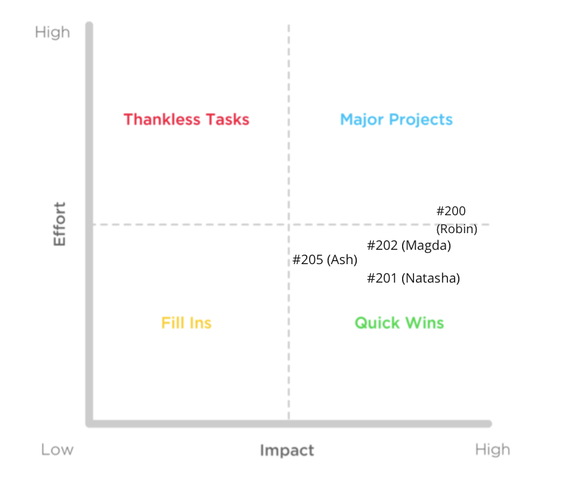Our workshop issues prioritised and organised in an Effort vs Impact Matrix.
Workshop Improvements
Issue #200: let players start the game from the screen
The area of concern for this issue is guidance and hierarchy. The goal of the issue is to improve the users' experience of starting the game as the initial system was shown to be confusing to some users in the user testing during our last project week.
Fulfilling this issue will improve the match between our web app and the real-world behaviour of new users. People playing the game for the first time don’t expect to be assigned the role of the game admin on their phones. Furthermore, their attention is mostly directed towards the laptop screens as they think of the phone merely as an input device during the game. Solving this issue will remove this clash of the behaviour of the web app and the behaviour expected by the users.
Before
The players could create a new room on their computer screens and share it with their friends.
The first player joining on their phone was given special "admin" rights, which allowed them to start the game.
People assumed that the person creating the room is the admin even though most of the time someone else joined first on their phone.
The admin would not notice the button to start the game because they would be focused on the screen.
There was further confusion because the other players did not know how to start the game.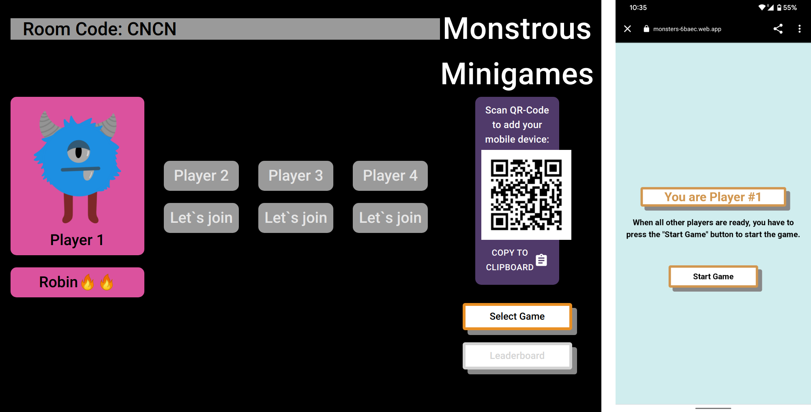Initial design before the workshop
After
The admin system was switched to the screens
In order to be able to start the game from the computer screens, the whole admin system in the backend had to be changed. The room system now saves the connected screens and assigns the first connected screen the admin role. Therefore, the person creating a new room gets to be the admin. If the admin screen is disconnected by the user losing connection or closing the app, the admin role gets reassigned to the screen that was first to connect after the admin.
The server now emits a new message to the admin screen, informing it that it has admin rights. This information is then stored in the game context on the client side. The event listeners had to be changed so that they expect and process the admin actions as coming from the screen instead of the phones.
Conditional rendering
The client can check its admin status by accessing it from its game context. If the screen has admin status, the user is shown additional options in the app. For now, these options include being able to choose a game that they want to play, starting that game and going back to the lobby after the game ended. Future features might include the option to remove unwanted players from the room.
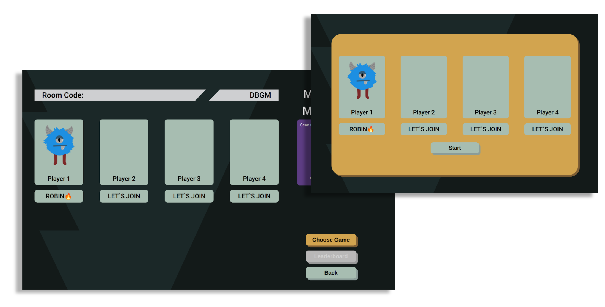 New design after the workshop. Only the admin can choose and start a game.
Meanwhile, the other players do not see the option to choose a game and if they look on their phones, they are told that the admin is choosing a game and that they should look on their screens for changes.
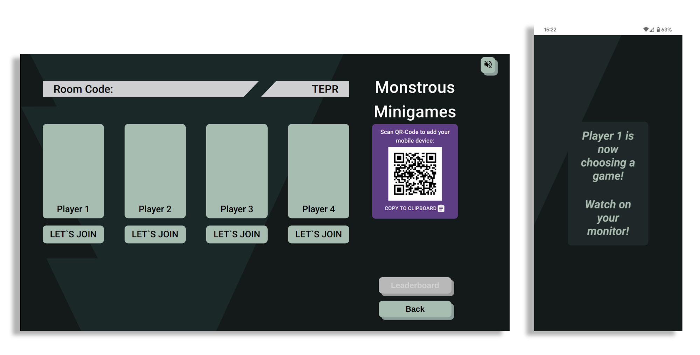The other players do not see the option to start the game.
Match between system and the real world
By completing this issue we adapted the admin system to the real-world behaviour of people using the web app during our user testing. By using conditional rendering, users are not confused by options that they cannot influence because they are not the admin of the room. The notice on the phones leads the user's attention towards their screens. The bright yellow button that stands out on the admin's screen grabs their attention and signals that it is the path towards starting the game.
This issue can be categorised as accessible since it enables the user to control the audio played on the website. That way, users who are unable to play the sound (e.g. are in a place where sound is not permitted, or use a screen reader) are able to control it. Furthermore, this issue falls under beauty and delight, since the background music helps to make the waiting more enjoyable and enhance the game experience.
Usability Heuristics: User Control and Freedom, Visibility of System Status (Nielsen, Jakob. 2021)
This issue allows users to control the audio (volume, mute & unmute). This in turn gives the users more freedom. Users may not want to use the app if it is difficult for them to stop/start the audio or if they cannot control the volume. Furthermore, this issue allows for enhanced visibility of the system status, since they are able to see how high the volume of the audio is.
Before
There was no way to control the audio. It played on the lobby page, as long as the user clicked the "Join Room" or "Create Room" button beforehand. These buttons were used to set the browser audio context permission.
The music was played automatically with a volume of 0.2.
When you reloaded the page, there was no way to start the music again. You would have to go back to the landing page and click on one of the two buttons that give the audio context permission.
The only way to stop the music once it starts playing is to close the tab in the browser settings. This is sometimes difficult to explain to users and is very inconvenient for them. There were also complaints that the automatic volume of the audio was either too loud or too quiet.
The lobby music is handled in a React Context Component, namely the AudioContextProvider. The permissions and start/pause of the music are then rendered in the individual components where the music should play.
After
Music added to the landing page
The campfire animation is displayed on the landing page, therefore we wanted the lobby music to play here to accompany the animation. You can hear the sounds of the campfire in the background, which should not be missing from the atmosphere. Because of the browser audio context permission, music cannot be started automatically in browsers. The user must first interact with the page (e.g. by clicking on a button). Therefore, a button with a speaker/volume icon has been placed in the upper right corner. When clicking on it, the audio context permission is fetched and the music is started. This functionality was then also added to the tutorial and settings pages so that the lobby music plays here as well.
Mute/unmute button
Although we intended to be able to adjust the audio in the settings, this is not immediately accessible from each page. If the user has the need to immediately/quickly mute the music, this would not be possible. Therefore, I have added a mute function to the audio button on the landing page. When first visiting the website, the music is muted since the user has not yet given the audio context permission. But if they click on this button, the music is started in the background. This button can then be toggled to pause/mute the music and play/unmute it again. This button was subsequently added to all the other pages where music can be played.
For this purpose, a React FunctionComponent was created. This handles which audio icon (whether a speaker or a crossed-out speaker, so muted) is rendered depending on whether permission was given, whether the audio is currently playing and whether the volume is above 0. Conditional rendering was used to accomplish this. Tests were also written for this button accordingly.
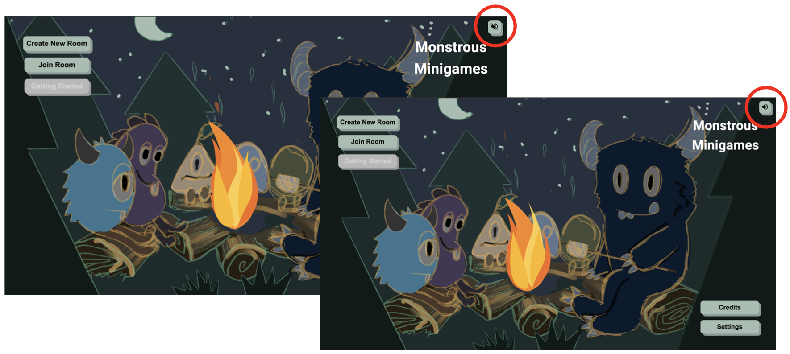Here you can see the newly implemented mute/unmute button.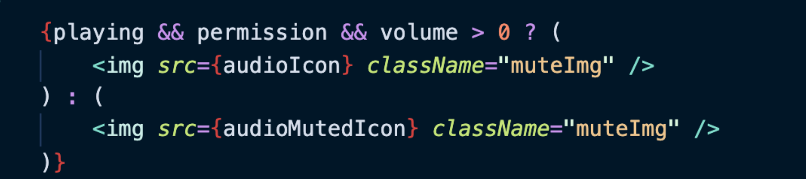Conditional rendering of the mute/unmute button allows the correct icon to be rendered, depending on the current state of the playing, permission and volume variable.
To create this state, the React AudioContextProvider had to be adapted. The problem was that the created HTML5 audio instance was always recreated as soon as any function in the audio context provider was called. This resulted in the inability to access an audio object that had already been created. So the music could not be paused and when you pressed play again (after pause), a new instance was created and the music played twice staggered. Therefore, this was stored in a state and initialised at the beginning with new Audio(lobbyMusic).
Play music automatically after reloading (when permission has already been given)
When reloading the page, the music always stopped before. To work around this, I tried giving the browser audio context permission in the UseEffect, so that it would be called automatically when the component was loaded. This worked but caused problems when the link was called in the incognito tab, for example, when no permission was given. The problem here was that you had to click on the mute button twice for the music to starts. This way, the crossed-out speaker icon was shown when the music was playing. When you try to play the audio (audio.play()), it returns a promise. So you can catch the thrown error when permission cannot be given when the user hasn't interacted with the page yet. Once caught, the permission variable is set to false again and playing is never set to true. So now the correct icon is shown on the button again. In addition, the handlePermission function has been relocated, since it is now also used by several components, as well as in several places in the lobby component.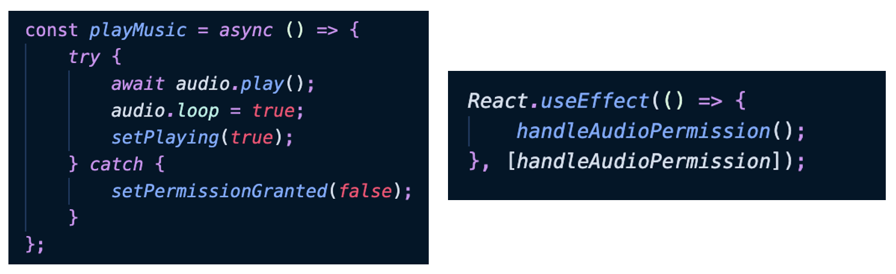Code to set permission when the component is initially loaded, providing the permission is granted. If not, an error is thrown, which is caught and the permission is set to false.
Volume slider in settings
The next UI element to implement was the volume settings in the settings component. For this, I used a prefabricated slider from Material-UI. Here values between 0 and 1 can be selected in steps of 0.05. In the onChange event, the new value is applied to audio.volume in the AudioContextProvider. Now the problem was, that if you leave the settings and come back, the slider is not at the same position as the current volume. Therefore, I had to create the state volume in the AudioContextProvider, so that this is always updated and can be passed back to the settings component. So, you can set the initial value of this slider to the current volume. The value of this volume is always set when audio.volume is changed. But the problem is, when dragging the slider, the music lags. This only happens if you also update the extra volume state variable. If you leave this out, the music doesn't lag on the slider anymore. So, from the Settings component, I tried to update this variable only when the Settings component is exited. The UseBeforeUnload hook was unfortunately not called, and the return value in the UseEffect only received the initial value from the slider. If you pass this value as a dependency into the UseEffect, the content of the UseEffect return is always called when this value changes and so the music was laggy again (because the variable was updated the same as before). Therefore, I have left it with the lag for the time being until I can find a better solution.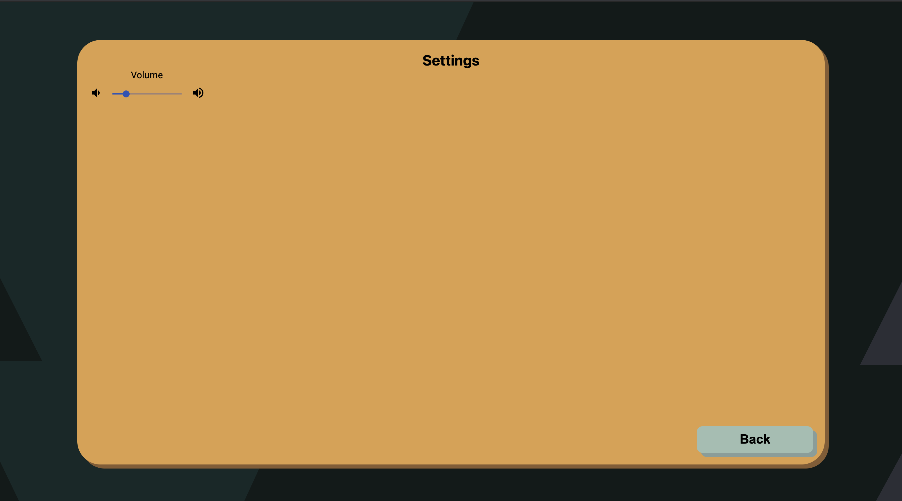The volume slider in the settings.
Remember the volume
The next point to consider is when the page is reloaded, the volume that was set before should be remembered and reused. I used LocalStorage to accomplish this. Each time the volume is adjusted, it is stored in the LocalStorage. So, when AudioContext is called again (e.g. because the page was reloaded, or if the website was visited again), the volume is initially searched in the LocalStorage and if found, it is used. If there is no such variable in the LocalStorage, a default value of 0.2 is used.
With this, it was then also possible to remember the volume value before muting. In general e.g. with television, when you mute it and then unmute it again, the volume is the same as before the muting it. If you turn the volume down to 0 yourself, without the mute button, it stays at 0. I, therefore, wanted to include this functionality as well. When the mute button is clicked, the volume from before is stored in the LocalStorage and the current volume is set to 0. When the mute button is clicked again, the current volume is fetched from the LocalStorage and set to the value from before. The music is also paused. But this only happens if the mute/unmute button is pressed. If the volume is set to 0 by the slider, it stays at 0 (even if you click on the Mute/Unmute button afterwards).
Why pause and set the volume to 0 when muting? Pausing is done to stop the music from running in the background so that when you unmute the music again, it will continue at the same point from where it was muted. The volume is therefore set to 0, so that if you then leave the page and come back, the volume is set back to 0, so it is muted again (persisted in LocalStorage).
Issue #202: improve controls of obstacles and give more useful feedback to the user
Criteria for good UI: Accessibility, Beauty & Delight and Responsive & Forgiving (Schneider, Kristina. 2021)
This issue can be classified into the two criteria accessibility as well as beauty and delight. The accessibility criteria is based on the fact that it can be difficult to solve the obstacles since the input is sometimes not recognised correctly or not at all. The implementation of a skip button provides more accessibility and the user is no longer blocked from playing on. The responsive and forgiving aspect is covered by replacing the progress bar with the particles as well as the animations to provide more visual feedback to the user. Lastly, the beauty and delight criteria can also be assigned to this issue by adjusting the obstacles to the new screen design.
Usability Heuristics: Error Prevention, Visibility of system status (Nielsen, Jakob. 2021)
In the future, the issue should prevent the user input from not being recognised or from being recognised incorrectly, thus keeping the user stuck at the obstacle.
Additionally, it improves the visibility that the input was recognised.
Before
The progress on the tree trunk obstacle is measured by the distance the finger moves on the touchscreen. To detect the touch input, we used the Hammer.js library, which is useful mainly in that it detects the direction of each touch gesture. In our case, only vertical touch gestures are used and the maximum distance in either direction is counted as progress. The obstacle is considered solved when the specified distance has been covered. However, this leads to several problems. On the one hand, some smartphones do not recognise vertical movements, but only circular movements, for example. This makes it difficult for the user to solve the task. Furthermore, these type of gestures permanently trigger events, which often lead to functions being executed several times.
const hammertime = touchContainer && new Hammer(touchContainer);
hammertime?.get('pan').set({ direction: Hammer.DIRECTION_HORIZONTAL });
if (distance <= MAX + Treshold) {
hammertime?.on('panup pandown', e => {
handleTouchEvent({ event: e.type, eventDistance: e.distance });
});
}
Due to the fact that the input on some devices does not work properly or sometimes not at all, the players are subsequently stuck at the obstacle. Thus, they are prevented from continuing to play and frustration often arises.
We could identify that the necessary effort to solve the spider obstacle is too high. This has to be overcome by blowing into the microphone or speaking. That input method, especially when repeated several times, can become very exhausting and negatively influence the gaming experience.
The feedback that the user gets about the current progress in solving the obstacles is displayed via a progress bar. At first, the bar is grey and fills up with green as the progress continues. In addition, the spider has small animations, for example, it swings from side to side and rolls its eyes.
Both obstacles still have the visual appearance of the prototype without a defined styling concept.
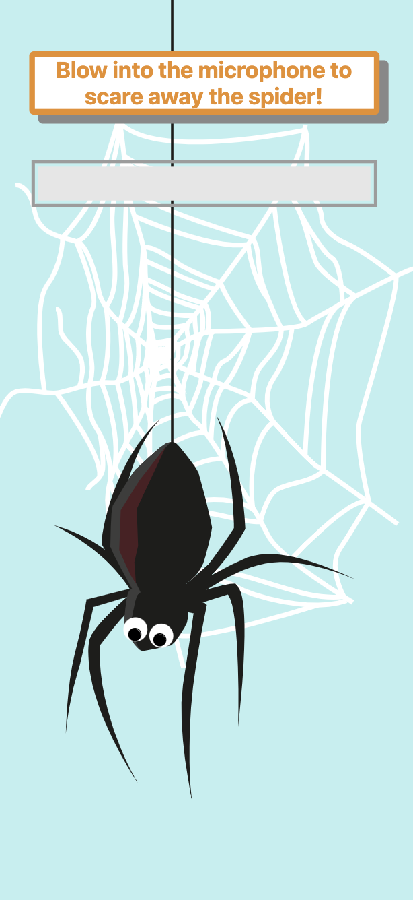The styling corresponds to that of the prototype.
After
Changed the swipe detection for the tree trunk obstacle
To solve the input problem, the distance measurement has been removed. Instead of this, the elapsed time is now measured, similar to a stopwatch. For this, the listeners of the touch gestures had to be changed as well. The timer is now started on every touch start event and stopped on a touch end event.
hammerTime.get('pan').set({ threshold: 0 });
hammerTime.on('panstart', e => {
handleStartTimer();
});
hammerTime.on('panend pancancel', e => {
handleStopTimer();
});
If the defined time limit is reached, the obstacle is considered solved. Through this new implementation, we solved the problems of the respective gesture recognition across the different smartphones. In addition, it also allows us to control how long it takes to solve the obstacle minimally since all types of obstacles should be given roughly the same time frame. And another benefit is that it makes the implementation more deterministic.
Implementation of a skip button
However, if the recognition of the touch input still does not work, a skip button appears after a timeout, which allows the player to stay in the game anyway.
The delay is chosen in such a way, that it would not be profitable to wait until the button appears and skip the obstacle. With this solution, we try to minimise the frustration that occurs and allow the player to continue playing.
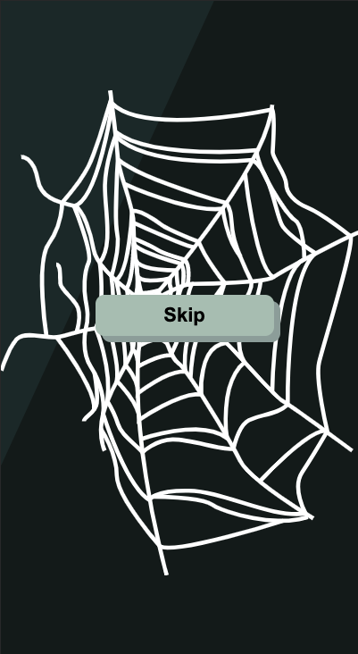If still no input was detected after a timeout, a skip button is displayed.
Adjustment of the maximum progress of the spider obstacle
The progress is calculated from the volume of the microphone input. Each time it exceeds a certain threshold, the progress is increased by 1. The threshold of the necessary progress has been reduced from 20 to 10.
Feedback for the user when solving the obstacle
We experienced that feedback via a progress bar is considered bad in the game area and that it is better to use animation that is in context with the events.
Instead of the progress bar, particles have now been implemented for the tree trunk obstacle, which appear whenever the player's finger is on the touchscreen. If the interaction is ended, the particles also disappear. The package react-particle-js was used for the implementation. Currently, the particles consist of circles, but later they will be replaced by images of wood splinters. Because the particles always appear as soon as the user interacts with the touchscreen, he gets immediate feedback on whether the input works.
Improvements have also been made to the spider. Previously, the animation was executed only once. This has now been changed so that it runs in an infinite loop. In addition, the thread on which the spider hangs has been used to indicate the current progress. In the beginning, the thread has a certain width, which becomes less and less with growing progress. In the end, the thread disappears and the spider falls.
As soon as the finger touches the touch screen, particles are displayed
The thread on which the spider hangs becomes thinner and thinner with growing progress.
Adaptation of the obstacles to the new screen design
The styling of the obstacles was visually adapted to the current styling. Here, the background was adjusted, the textual instructions and also the progress bar was removed.
At first, the plan was to use landscape mode for the layout of the controller. However, due to the implementation of the new styling of the obstacles, it was decided to stay in portrait mode.
The reason for this, is that the phone will have to be turned at the latest when a spider obstacle is reached, since the microphone is usually at the bottom of the phone.
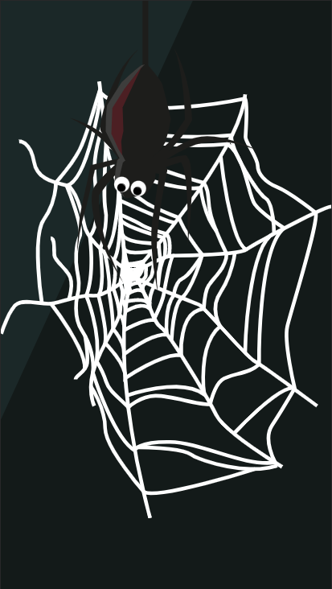The background was changed and the progress bar removed
The issue can be classified as beauty and delight because the overall appearance of the user interface has been improved by adding more movement to the game scene, as well as a new motivation for the user to reach the goal by implementing a swarm of mosquitos that chases the monsters.
Since this issue aims to improve the appearance of our game, it falls under the category of aesthetic and minimalist design. The four design principles are employed in our new layout in the following ways:
Contrast: The brightly coloured monsters contrast with the dark, cool colours in the background
Repetition: The colour scheme used in this scene matches the lobby and the start screen.
Alignment: The player characters are evenly spaced out and their start and endpoint are at the same height.
Proximity: The four lanes can easily be recognised by having the background image appear multiple times.
Before
Before the workshop, the background of the game consisted of a picture of the forest and four lanes for the player characters. The monsters moved from the start on the left side of the screen to the goal on the right side. Only the monsters moved while the background stayed the same.
During the last play tests, multiple players gave the feedback that the game seemed rather static. In order to make the game more engaging and exciting to watch, there needs to be more movement in the scene. Allowing the players to see all the obstacles and the goal in the beginning is another aspect that should be changed to achieve this objective.
In addition to that, with this background composition we were not using the whole screen space.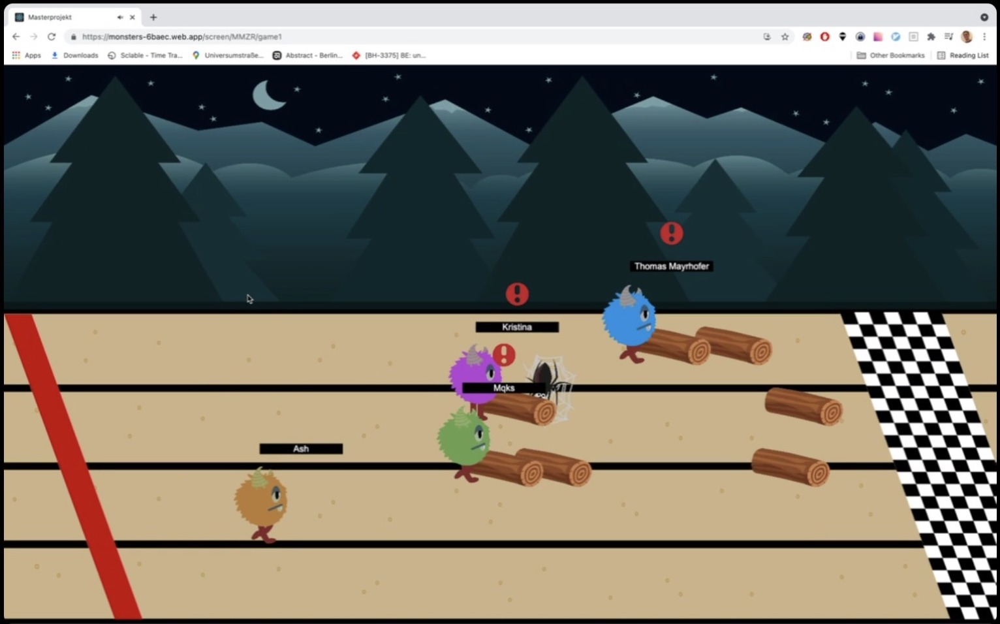This image shows the previous state of the game layout.
After
Background Image
The background image has been changed so it is displayed four times to represent the four lanes. This way, the player characters can be spaced out evenly within the whole screen height. The image can also be seen more clearly now since it is no longer covered by the tracks. In addition to that, the perspective of the game looks better now compared to our initial state.
Scrolling
The background has been updated to move along with the players. Since there can only be one camera per Phaser instance, it is not possible to have a separate camera following each player. Therefore, it moves at a constant speed for all players. The scrolling adjusts to the width of the player’s screen and it stops moving once the goal can be seen. The example below shows how the scrolling has been implemented. The camera's position on the X axis is continuously increased by a constant number, the cameraSpeed. Using the setBounds function, the start point is set to the upper left corner of the canvas (coordinates 0, 0) and its width and height are set to match the browser window's dimensions.
Another aspect that makes the game more challenging, is that not all the obstacles are visible from the beginning of the game, which makes it less predictable.
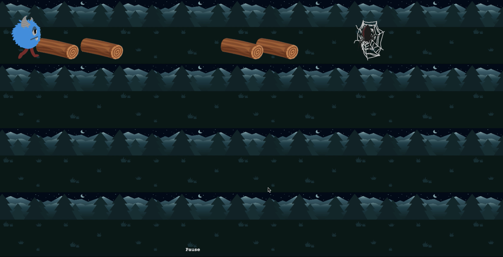The new game design with the separate lanes is depicted here.
Video of the new game design in action.
Chasers
Since the background is no longer static, the monsters can fall off the screen. In that case, they are removed from the game. In order to make it clear for the players that they should not fall back too far, we added a swarm of mosquitos that chases them. If the player reaches the left corner of the screen, he is caught by the insects. To achieve this, the mosquitos’ position is received from the backend along with the game state updates and the sprite is moved to the according position. This feature will be finished in the future, since there was not enough time to do so during the workshop.
Summary
In summary, our initial prioritisation of issues and associated effort estimate was quite realistic. Except for a few minor details, we were able to work through all of the issues during the workshop. Our estimations proved to be reasonably accurate.
In retrospect, it might have been better to divide our selected issues into several smaller ones, as they were quite large.
 Magdalena Maislinger
Magdalena Maislinger Natasha Troth
Natasha Troth Robin FellingerKristina Schneider
Robin FellingerKristina Schneider Leon Spiegelmayr
Leon Spiegelmayr{kind=link}
{kind=link}
.png){kind=link}
.png){kind=link}
{kind=link}
{kind=link}
{kind=link}
{kind=link}
{kind=link}
{kind=link}
{kind=link}
{kind=link}
{kind=link}
{kind=link}
{kind=link}
{kind=link}